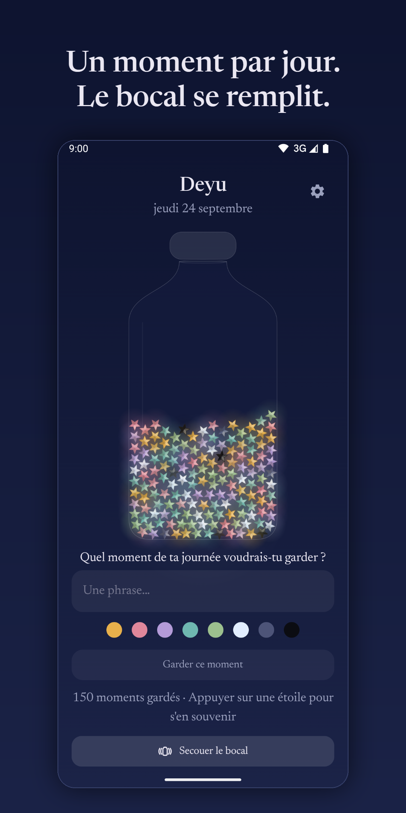
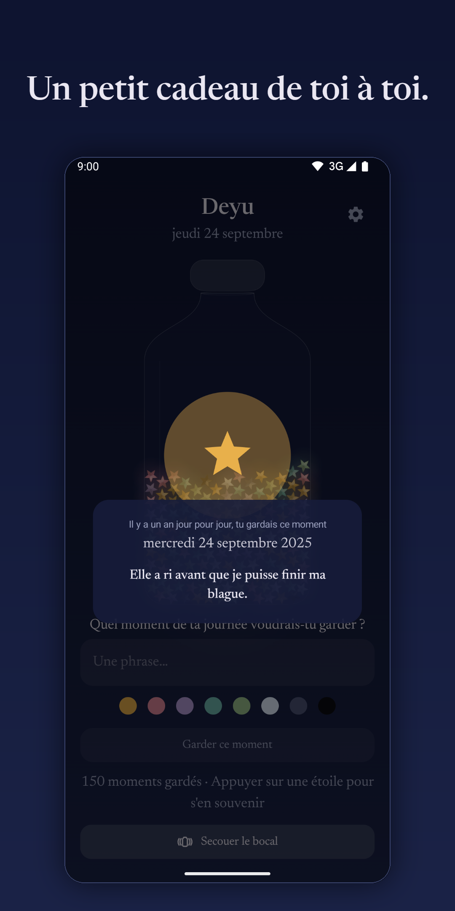
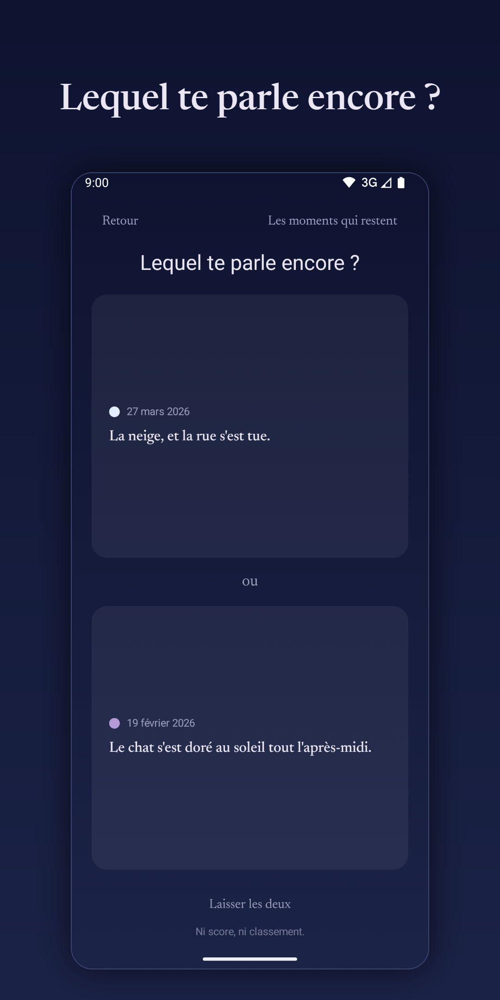

Un moment par jour, ton année.
Un bocal à souvenirs rien qu'à toi, sur Android. Chaque jour, une phrase de ta journée se replie en étoile et vient se déposer dans ton bocal, qui se remplit au fil de l'année.



Écris une phrase. Regarde ton bocal se remplir. Et laisse tes moments revenir te voir, jour pour jour, à leur date anniversaire.
Sans inscription, sans serveur, sans analyse, sans pub. Tout reste privé sur ton téléphone : l'appli n'a même pas accès à Internet.
Si tu le souhaites, un rappel discret, seulement les jours sans étoile. Rien à tenir, rien à perdre.
Un moment gardé revient te voir, jour pour jour, à sa date anniversaire, comme un petit cadeau de toi à toi.